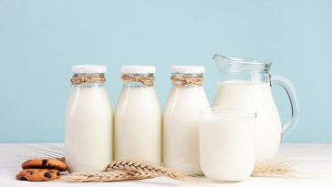

PRODUK KAMI

Susu Original
Nikmati kesegaran alami dari susu sapi pilihan yang diolah secara higienis. Kaya nutrisi dan cocok untuk konsumsi langsung maupun campuran minuman favorit Anda.

Susu Skim
Susu rendah lemak dengan tetap mempertahankan kandungan protein dan kalsium. Ideal untuk gaya hidup sehat, diet, atau kebutuhan industri pangan.

Susu Cream
Tekstur lembut dengan rasa lebih kaya, cocok untuk campuran kopi, dessert, atau produk olahan. Diolah dengan standar kualitas tinggi untuk hasil maksimal.